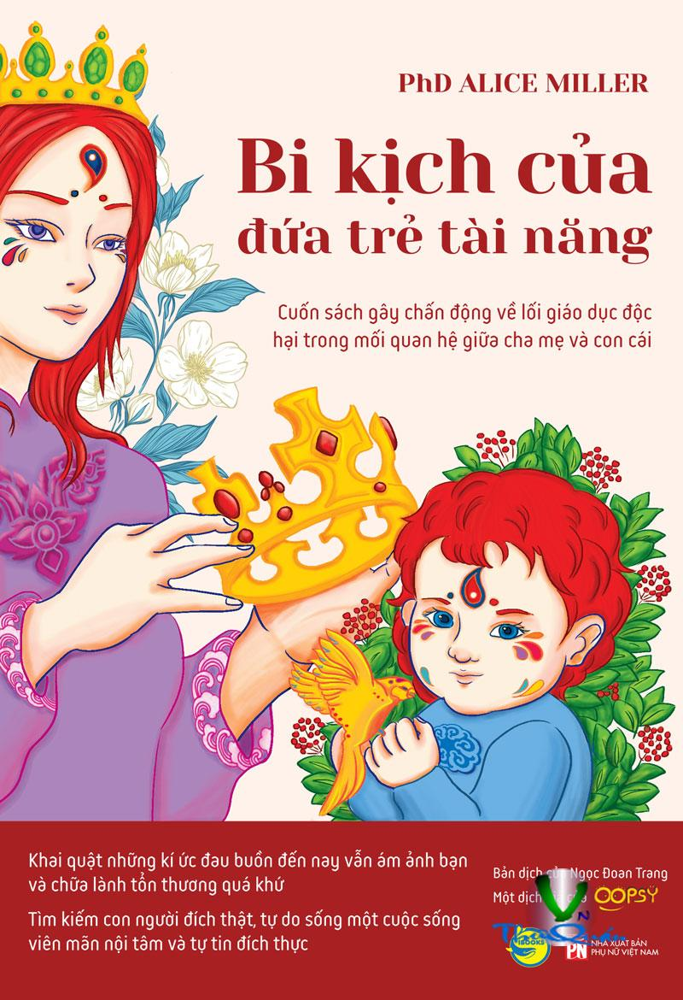

« Back
Bi Kịch Của Đứa Trẻ Tài Năng
By Phd Alice Miller

Chương 1
Đứa Trẻ Giàu Mà Nghèo
Thế Giới Cảm Xúc Bị Thất Lạc
Hành Trình Đi Tìm Cái Tôi Đích Thực
Quá Khứ Của Nhà Trị Liệu
Bộ Não Vàng
Chương 2
Ảo Tưởng Về Tình Yêu
Những Giai Đoạn Trầm Cảm Trong Quá Trình Trị Liệu
Ngục Tù Nội Tâm
Chứng Trầm Cảm: Nhìn Theo Khía Cạnh Xã Hội
Sự Tích Hoa Thủy Tiên
Chương 3
Sỉ Nhục Con Trẻ, Coi Thường Kẻ Yếu: Những Hệ Quả
Đối Mặt Với Thái Độ Coi Thường Trong Trị Liệu
Sự “Trụy Lạc”: “Quỷ Dữ” Trong Thế Giới Tuổi Thơ Của Hermann Hesse
Người Mẹ: Trung Gian Của Xã Hội Trong Năm Tháng Đầu Đời
Thái Độ Coi Thường: Nỗi Cô Đơn Ai Thấu
Từ Bỏ Thái Độ Coi Thường: Tôn Trọng Cuộc Sống
Vài Dòng Cho Cuốn Sách Tái Bản Năm 2007
Phụ Lục
Tài Liệu Tham Khảo
Đôi Lời Về Tài Liệu Tham Khảo